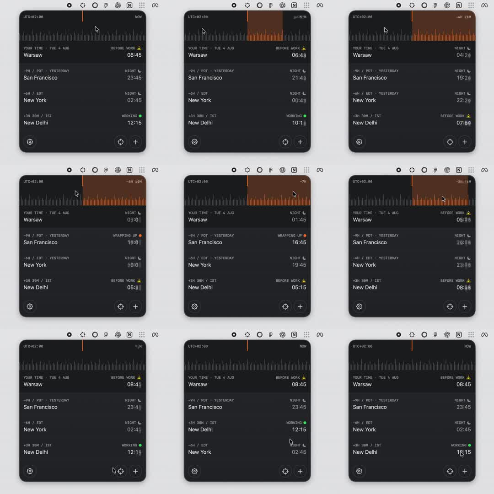

Dark world-clock app with a scrubbable 24h tick ruler: dragging shifts time globally, all city rows roll odometer clocks, an orange band shows the scrubbed window with live duration, statuses (night/working) update; rows can be drag-reordered.

Build a timezone scrubber. Header: 24-hour tick ruler (canvas: 1px bars per 10min, taller at hours) under a fixed red NOW line. Horizontal drag maps px->minutes (~4px=10min) into a global timeOffset. While offset != 0, fill an orange band from NOW to the scrubbed position with a centered duration label ('-6H 40M'). City rows (name, GMT badge, TODAY/YESTERDAY chip, status icon, time) render liveTime + zoneOffset + timeOffset. Times = per-digit odometer columns: each digit a translateY strip rolling 200ms ease, only changed digits roll. Status icons from local hour (moon 22-06, green dot 9-18, else sun). On release, animate timeOffset->0 with a spring (stiffness ~170, damping ~22) so ruler, band and digits roll back together. Rows support vertical drag-reorder with translateY following the finger and siblings animating aside.